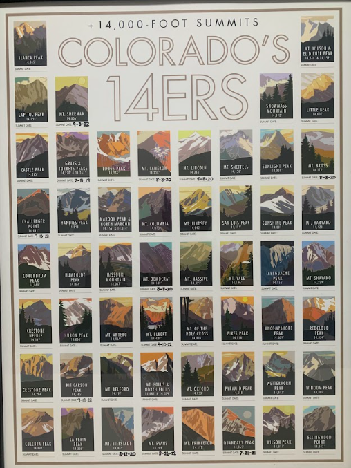

I am from Colorado and I love hiking. Coloradans love their mountains and have coined the term 14ers. The term “14er” refers to a mountain peak that
rises at least 14,000 feet (4,267 meters) above sea level. A 14er is more than just hiking a mountain — it's an experience, a test of endurance, and
in my opinion a truly great accomplishment. I have many great memories peaking 14ers. While there are hundreds of tall peaks across the globe, 14ers are
iconic in Colorado, there are 53 to 58 of them depending on how you count. I personally count 58 and my goal is to do all of them. (There are other 14ers in the lower 48 states: 12 in California and 2 in Washington)

14ers I've Completed
Gray's Peak 14,270'
Summit Date: 7/8/19
Can be done in tandem with Torrey's Peak
Torrey's Peak 14,267'
Summit Date: 7/8/19
Can be done in tandem with Gray's Peak
Mt. Cameron 14,238'
Summit Date: 8/8/20
Can be done in tandem with Mt. Lincoln, Bross, and Democrat
Mt. Lincoln 14,286'
Summit Date: 8/8/20
Can be done in tandem with Mt. Cameron, Bross, and Democrat
Mt. Bross 14,172'
Summit Date: 8/8/20
Can be done in tandem with Mt. Cameron, Lincoln, and Democrat
Mt. Democrat 14,148'
Summit Date: 8/8/20
Can be done in tandem with Mt. Cameron, Lincoln, and Bross
Mt. Bierstadt 14,065'
Summit Date: 8/12/20
Quandary Peak 14,265'
Summit Date: 7/21/21
Mt. Evans 14,264'
Summit Date: 8/26/22
Mt. Sherman 14,036'
Summit Date: 9/3/22
Mt. Elbert 14,439' (Tallest in Colorado)
Summit Date: 9/10/22
Kit Carson Peak 14,165' (Most difficult one I have done)
Summit Date: 9/13/22
Can be done in tandem with Challenger Point
Challenger Point 14,081' (Most difficult one I have done)